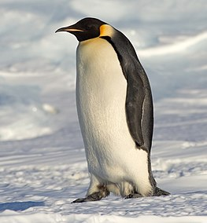
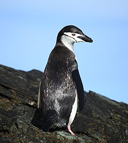
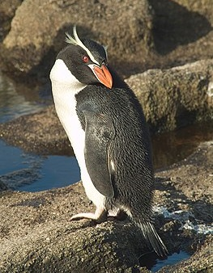
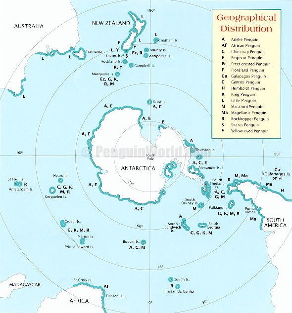

Penguin
Penguins are a group of aquatic flightless birds from the order Sphenisciformes of the family Spheniscidae. They live almost exclusively in the Southern Hemisphere: only one species, the Galápagos penguin, is found north of the Equator. Highly adapted for life in the ocean water, penguins have countershaded dark and white plumage and flippers for swimming. Most penguins feed on krill, fish, squid and other forms of sea life which they catch with their bills and swallow whole while swimming. A penguin has a spiny tongue and powerful jaws to grip slippery prey.
They spend about half of their lives on land and the other half in the sea. The largest living species is the emperor penguin (Aptenodytes forsteri) on average, adults are about 1.1 m (3 ft 7 in) tall and weigh 35 kg (77 lb). The smallest penguin species is the little blue penguin (Eudyptula minor), also known as the fairy penguin, which stands around 30–33 cm (12–13 in) tall and weighs 1.2–1.3 kg (2.6–2.9 lb). Today, larger penguins generally inhabit colder regions, and smaller penguins inhabit regions with temperate or tropical climates. Some prehistoric penguin species were enormous: as tall or heavy as an adult human. There was a great diversity of species in subantarctic regions, and at least one giant species in a region around 2,000 km south of the equator 35 mya, during the Late Eocene, a climate decidedly warmer than today.
Etymology
Penguin
The word penguin first appears in literature at the end of the 16th century. When European explorers discovered what are today known as penguins in the Southern Hemisphere, they noticed their similar appearance to the great auk of the Northern Hemisphere and named them after this bird, although they are not closely related.
The etymology of the word penguin is still debated. The English word is not apparently of French, Breton or liish origin (the latter two are attributed to the French word pingouin), but first appears in English or Dutch.
Pinguinus
Since 1871, the Latin word Pinguinus has been used in scientific classification to name the of the great auk (Pinguinus impennis, meaning "plump or fat without flight feathers"), which became extinct in the mid-19th century. As confirmed by a 2004 genetic study, the Pinguinus belongs in the family of the auks (Alcidae), within the order of the Charadriiformes.
The birds currently known as penguins were discovered later and were so named by sailors because of their physical resemblance to the great auk. Despite this resemblance, however, they are not auks, and are not closely related to the great auk. They do not belong in the Pinguinus, and are not classified in the same family and order as the great auk. They were classified in 1831 by Charles Bonaparte in several distinct genera within the family Spheniscidae and order Sphenisciformes.
Systematics
The number of extant penguin species is debated. Depending on which authority is followed, penguin biodiversity varies between 17 and 20 living species, all in the subfamily Spheniscinae. Some sources consider the white-flippered penguin a separate Eudyptula species, while others treat it as a subspecies of the little blue penguin, the actual situation seems to be more complicated. Similarly, it is still unclear whether the royal penguin is a separate species or merely a color morph of the macaroni penguin. The status of the rockhopper penguins is also unclear.
-
Aptenodytes – great penguins
- King penguin, Aptenodytes patagonicus
The emperor penguin is the tallest and heaviest of all living penguin species and is endemic to Antarctica. The male and female are similar in plumage and size, reaching 100 cm (39 in) in length and weighing from 22 to 45 kg.
- Emperor penguin, Aptenodytes forsteri
King penguins mainly eat lanternfish, squid, and krill. On foraging trips, king penguins repeatedly dive to over 100 metres, and have been recorded at depths greater than 300 metres.
- King penguin, Aptenodytes patagonicus
-
Pygoscelis – brush-tailed penguins
- Adélie penguin, Pygoscelis adeliae
It is named after Adélie Land, in turn, named for Adèle Dumont d'Urville, who was married to French explorer Jules Dumont d'Urville, who first discovered this penguin in 1840.
- Chinstrap penguin, Pygoscelis antarcticus
Its name stems from the narrow black band under its head, which makes it appear as if it were wearing a black helmet, making it easy to identify.
- Gentoo penguin, Pygoscelis papua
Gentoo penguins can reach a length of 70 to 90 cm (28 to 35 in), making them the third-largest species of penguin after the great penguins (emperor penguin and the king penguin).
- Adélie penguin, Pygoscelis adeliae
-
Spheniscus – banded penguins
.jpg)
- Magellanic penguin, Spheniscus magellanicus
The Magellanic penguin was named after Portuguese explorer Ferdinand Magellan, who spotted the birds in 1520.
- Galápagos penguin, Spheniscus mendiculus
The Galápagos penguin is one of the smallest species of penguin in the world, because of their warm environment, these penguins have developed techniques to stay cool.
- African penguin, Spheniscus demersus
Once extremely numerous, the African penguin is declining rapidly due to a combination of several threats and is classified as endangered.
- Magellanic penguin, Spheniscus magellanicus
-
Megadyptes

- Yellow-eyed penguin, Megadyptes antipodes
It is the largest living penguin to breed on the mainland of New Zealand and the fourth or fifth-heaviest living penguin going on body mass. Males at around 5.53 kg (12.2 lb) on average are somewhat heavier than females at an average of 5.13 kg (11.3 lb).
- Waitaha penguin, Megadyptes waitaha (extinct, disputed)
"The fact we find these bones in archaeological sites, villages or settlements, suggests hunting played a role in their extinction. The birds were an easy target, easy to take and there were never very many of them."
- Yellow-eyed penguin, Megadyptes antipodes
-
Eudyptes – crested penguins
- Fiordland penguin, Eudyptes pachyrhynchus
- Snares penguin, Eudyptes robustus
- Southern rockhopper penguin, Eudyptes chrysocome
- Northern rockhopper penguin, Eudyptes moseleyi
- Royal penguin, Eudyptes schlegeli (disputed)
- Chatham penguin, Eudyptes warhami (extinct)
All are black and white penguins with yellow crests, red bills and eyes, and are found on Subantarctic islands in the world's southern oceans. All lay two eggs, but raise only one young per breeding season; the first egg laid is substantially smaller than the second.
Habitat
Although almost all penguin species are native to the Southern Hemisphere, they are not found only in cold climates, such as Antarctica. In fact, only a few species of penguin actually live so far south. Several species live in the temperate zone; one, the Galápagos penguin, lives as far north as the Galápagos Islands, but this is only made possible by the cold, rich waters of the Antarctic Humboldt Current that flows around these islands. Also, though the climate of the Arctic and Antarctic regions is similar, there are no penguins found in the Arctic.
Major populations of penguins are found in Angola, Antarctica, Argentina, Australia, Chile, Namibia, New Zealand, and South Africa. Satellite images and photos released in 2018 show the population of 2 million in France's remote Ile aux Cochons has collapsed, with barely 200,000 remaining, according to a study published in Antarctic Science.
